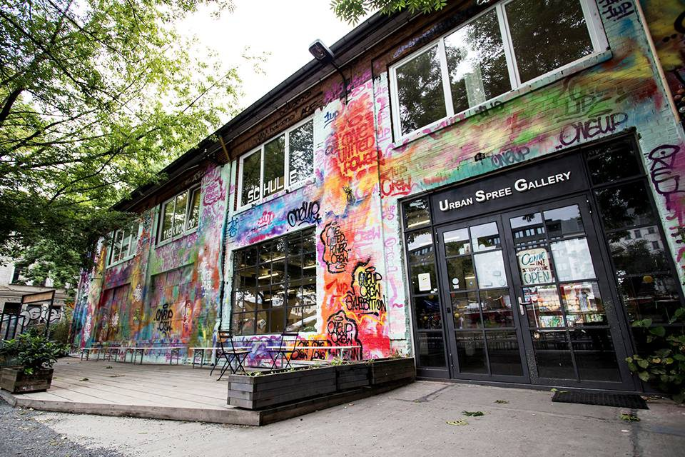

Un lieu insolite qui plaira aux fans de street-art cette fois-ci. Situé dans le quartier de Friedrichshain, en ex-RDA, RAW c’est près de 14 terrains de foot, et de nombreuses associations, des boîtes de nuit, un mur d’escalade, un skate parc… Ces anciens entrepôts de maintenance des chemins de fer aujourd’hui réaménagés en friches créatives, font le bonheur des artistes et des fans des nuits berlinoises.
On ne peut pas parler de l’histoire de Berlin sans mentionner ses squats. La devise « Arm aber Sexy » (Pauvre mais Sexy) résume bien cet état d’esprit. A la fin de la guerre froide, de nombreux groupes antisystèmes occupent les immeubles abandonnés qui peuplent les rues de la capitale. Aujourd’hui la plus part ont été désertés ou légalisés, mais valent le détour. Direction donc le Tacheles et Linienstrasse 206 dans Berlin Mitte, Kastanienallee 86 à Prenzlauerberg ou encore Liebig 34 à Friedrichshain.
Grand classique de la capitale allemande, Mauerpark est connu pour ses marchés aux puces et son atmosphère bohème. Mais dès que l’été pointe le bout de son nez le parc propose une nouvelle distraction : un karaoké géant tous les dimanches matins. Dans un ancien amphithéâtre les Berlinois jeunes et moins jeunes se succèdent pour chanter les classiques de la RDA, Britney Spears ou encore Oasis et les Beatles.